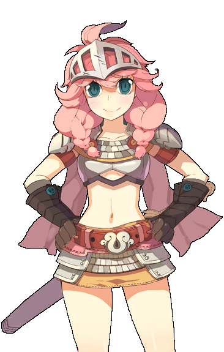
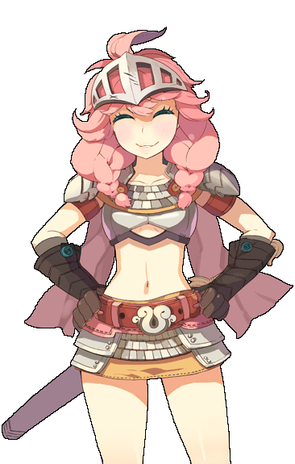
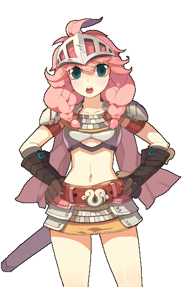
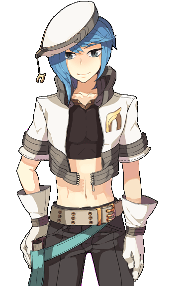
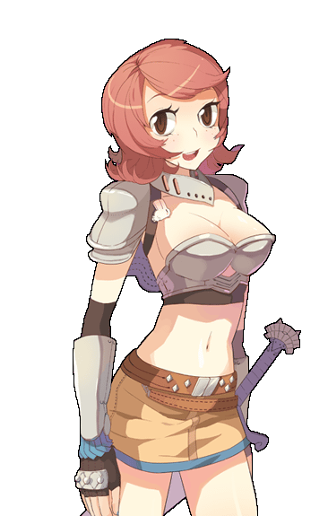
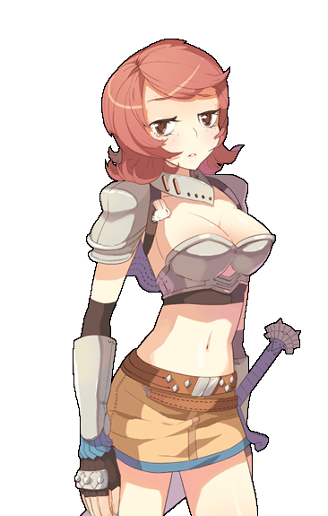
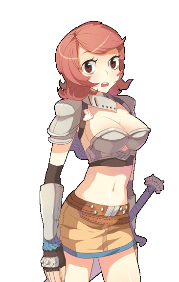
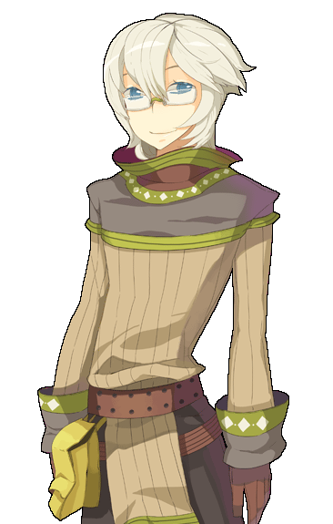
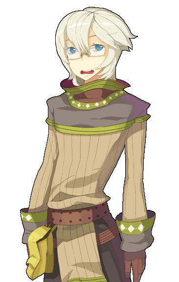

画像にリンクがはってあるものは、クリックすると別窓で大きめサイズが表示されます。
|  |  |
ルーン | ルーン |

| |
ルーン | ルーン |
|  |  |
ルーン | ミッド |
ミッド | ミッド |
ミッド | ミッド |
|  | |
リリア | リリア |

|  |
リリア | リリア |
|  |

|
リリア | ユーリ |
|  | |
ユーリ | ユーリ |
|  | |
ユーリ | ユーリ |
back
(c) Gravity Co., Ltd. & Lee MyoungJin(studio DTDS). All rights reserved.
(c) GungHo Online Entertainment, Inc. All Rights Reserved.
当コンテンツの再利用（再転載・配布など）は、禁止しています。